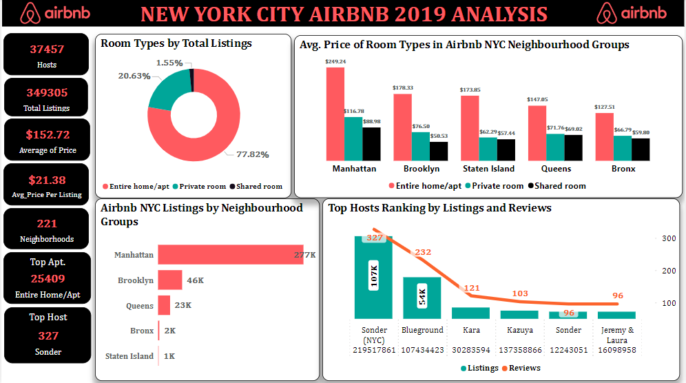

New York City Airbnb
Performance Analysis
Exploring Airbnb pricing, neighborhood patterns, room types, host activity, and review trends across New York City listings in 2019.

Overview
This project analyzes Airbnb listings in New York City for 2019 to understand how listing performance varies across neighborhoods, room types, pricing levels, and host activity. The dataset includes information on hosts, locations, room types, availability, reviews, and listing prices, making it useful for exploring both market trends and factors that may influence guest interest.
The analysis focuses on uncovering patterns in listing distribution, identifying high-performing hosts and neighborhoods, and examining how pricing and review activity vary across different property types.
Objective
The aim of this project was to extract actionable insights from the New York City Airbnb dataset by analyzing listing performance, pricing trends, room type distribution, review behavior, and host activity across the city.
Business Questions
- How are Airbnb listings distributed across New York City neighborhoods?
- How does price vary by neighborhood group and room type?
- What relationship exists between property characteristics and pricing?
- How do review counts and review frequency vary across listings?
- Which hosts and areas show the strongest listing performance?
Dataset
The dataset used for this analysis is the New York City Airbnb Open Data for 2019, sourced from Kaggle. It contains 48,896 rows and 16 columns covering listing identifiers, host details, neighborhood information, geographic coordinates, room types, pricing, minimum nights, review activity, host listing counts, and annual availability.
My Approach
I duplicated the raw dataset and cleaned the working copy in Microsoft Excel by reviewing the variables, checking data consistency, and preparing the fields required for analysis. After cleaning and transformation, I loaded the dataset into Power BI to build visualizations that explored neighborhood distribution, room type pricing, host performance, review trends, and listing availability patterns.
Tools Used
- Microsoft Excel for data cleaning and transformation
- Power BI for dashboard development and visualization
- Kaggle New York City Airbnb Open Data as the project dataset
Key Insights
- The dataset covered 37,457 unique hosts and 221 neighborhoods across New York City.
- Manhattan had the highest concentration of Airbnb listings, followed by Brooklyn.
- The Financial District recorded the highest number of listings, suggesting strong demand from tourists and business travelers.
- Entire home/apartment was the most common room type and also the most expensive across neighborhood groups.
- The average listing price across room types was $152.72.
- Sonder (NYC) emerged as the top host based on listing activity.
What I Learned
This project strengthened my ability to work with marketplace and hospitality data in Power BI. I practiced cleaning and structuring listing-level data in Excel, building comparisons across neighborhoods and room types, and using visual analysis to connect host behavior, pricing patterns, and guest review activity.
Result
The final output is an interactive Power BI dashboard that presents New York City Airbnb performance through pricing analysis, neighborhood distribution, host activity, and review trends. The project highlights how location and room type shape listing performance and provides useful insights into the dynamics of the city’s short-term rental market.